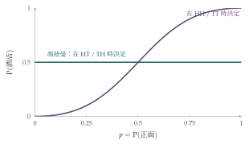

STEP I 2019，第 11 題
繼續之前，請先閱讀題目（原題為英文）。題目載於 OCR 提供下載的 2019 年 STEP 試卷（zip 檔案）內的 STEP I 試卷： www.ocr.org.uk/Images/696590-2019-past-papers.zip
引子
你要作出一個公平（fair）的決定，但手上唯一的硬幣是彎的，而且你不知道它偏差（bias）有多大。這樣還能公平地作出選擇嗎？馮紐曼（John von Neumann）在 1951 年給出的答案是：擲兩次。若結果是 HT，就選酒店；若是 TH，就選茶室；若是 HH 或 TT，就再擲兩次。由於 HT 和 TH 的概率（probability）都是 \(pq\)，所以不論 \(p\) 是多少，這個決定都完全公平。
本題的程序剛好相反：它在出現 HH 和 TT 時作決定，這樣做很快，卻不公平（選酒店的概率是 \(\frac{p^2}{p^2 + q^2}\)）。本題要證明的是，不論硬幣如何，這個程序都不會拖得很久。比較這兩個程序，可以看到產生隨機性時的一個基本取捨（trade-off）：速度與公平之間的取捨。
動筆之前
在一輪之中，作出決定的概率是多少？沒有決定的概率又是多少？\(2pq\) 最大可以取甚麼值？
若兩枚硬幣結果相同，便作出決定，概率是 \(p^2 + q^2\)；否則他們繼續下去，概率是 \(2pq\)。由於 \(pq = p(1 - p) \leq \frac14\)（當 \(p = \frac12\) 時等號成立），所以 \(2pq \leq \frac12\)。
逐步解題
階段 1 在第 \(n\) 輪作出決定
各輪之間互相獨立（independent）。要在第 \(n\) 輪作出決定，須先有 \(n - 1\) 輪結果不同，然後一輪結果相同： \[\mathrm{P}(\text{作出決定的輪次為 } n) = (2pq)^{n-1}(p^2 + q^2). \qed\]
階段 2 在第 \(n\) 輪或之前作出決定
在首 \(n\) 輪中沒有作出決定的概率是多少？
\(n\) 輪之內沒有決定的概率是 \((2pq)^n \leq \bigl(\frac12\bigr)^n\)，所以不論 \(p\) 是多少，在第 \(n\) 輪或之前作出決定的概率至少是 \(1 - \frac{1}{2^n}\)。■
階段 3 三個人
第一輪出現兩個正面和一個反面之後，第三個人把反面翻成正面。第二輪要發生甚麼事才會有決定？如果第一輪是兩個反面和一個正面呢？
第一輪作出決定的概率是 \(p^3 + q^3\)。否則，有兩枚硬幣結果相同，另一枚不同。若多數是正面（概率為 \(3p^2q\)），那枚不同的硬幣會被翻成正面，而第二輪要作出決定，就需要另外兩人都擲出正面：概率是 \(p^2\)（此時已不可能全是反面）。同理，若多數是反面（概率為 \(3pq^2\)），要作出決定就需要兩個反面：\(q^2\)。所以 \[\mathrm{P}(\text{作出決定的輪次不遲於 } 2) = p^3 + q^3 + 3p^2q\cdot p^2 + 3pq^2\cdot q^2.\]
把所有東西用 \(s = pq\) 表示。（利用 \(p + q = 1\)。）
我們有 \(p^3 + q^3 = (p + q)^3 - 3pq(p + q) = 1 - 3s\)，以及 \(3p^4q + 3pq^4 = 3s(p^3 + q^3) = 3s(1 - 3s)\)。所以 \[\mathrm{P} = 1 - 3s + 3s - 9s^2 = 1 - 9s^2 \geq 1 - \frac{9}{16} = \frac{7}{16},\] 因為 \(s \leq \frac14\)。■
回顧
補事件（complement）。「在第 \(n\) 輪或之前至少發生一次」最容易的算法是 \(1 -\)（「\(n\) 輪之內從未發生」）。
為最壞情況定界。未知的 \(p\) 是靠不等式（inequality）\(pq \leq \frac14\) 來處理的。
對稱函數（symmetric functions）。對 \(p\) 和 \(q\) 對稱的式子，用 \(p + q = 1\) 和 \(pq\) 來表示時便會簡化。
背後的數學
馮紐曼的妙計
題目中的程序很快，但有偏差。馮紐曼的程序則是公平的：擲兩次，出現 HT 或 TH 就作決定，出現 HH 或 TT 就重複。每次嘗試成功的概率是 \(2pq\)，所以平均需要 \(\frac{1}{2pq}\) 次嘗試；當硬幣偏差很大時，這會很慢（圖 12.9.1）。題目的程序每輪作出決定的概率是 \(p^2 + q^2 \geq \frac12\)，但當 \(p > \frac12\) 時，它的結果偏向酒店。

提取隨機性
馮紐曼的妙計是第一個隨機性提取器（randomness extractor）：一種把不完美的隨機性變成完美隨機性的程序。它浪費很多（每兩次投擲最多只得到一個公平的位元，而且往往一個也得不到）；更好的方法會把被棄掉的 HH 和 TT 重新利用，從而提取硬幣所含的幾乎全部隨機性，而這隨機性的多少是用硬幣的熵（entropy）來量度的，即每次投擲 \(-p\log_2p - q\log_2q\) 個位元。提取器用於電腦的硬件隨機數產生器：這些產生器收集不可預測但有偏差的物理雜訊，並必須把它變成無偏差的位元，供密碼學（cryptography）使用。
馮紐曼在 1951 年的論文「Various techniques used in connection with random digits」中描述了這個妙計。當時他和同事正在為設計核武器而進行一些最早期的電腦模擬（即「蒙地卡羅方法」（Monte Carlo method））。在同一篇論文中，他就用算術方法產生隨機數說了一句名言：「任何人若考慮用算術方法來產生隨機數字，當然就是身處罪惡之中。」
思維技巧
當某個參數未知時，找出那些不論參數取何值、概率都相等的事件，並以它們作為決定的依據。
HT 和 TH 有相同的概率 \(pq\)，所以比較這兩者就把 \(p\) 完全消去了。在大學裏，同樣的想法在統計學中以樞軸量（pivotal quantities）的形式出現，也出現於實驗設計之中：在那裏，隨機化（randomisation）和對稱性會把未知的效應抵消掉。
延伸練習
輪數的期望值。求第 (i) 部分的程序所需輪數的期望值（expected number），以及馮紐曼的程序所需輪數的期望值。對哪些 \(p\) 而言，馮紐曼的程序較慢？
公平的三選一。利用一枚有偏差的硬幣，設計一個程序，從三個選項中選出一個，使每個選項的概率都恰好是 \(\frac13\)。
用公平硬幣造出有偏差的骰子。利用一枚公平的硬幣，設計一個程序，模擬一枚擲出正面的概率恰好是 \(\frac13\) 的硬幣。所需投擲次數的期望值是多少？
再看三個人。在第 (ii) 部分中，他們去酒店的概率是多少？請以 \(p\) 的函數表示。當 \(p = \frac12\) 時，這個程序公平嗎？
延伸閱讀
John von Neumann，「Various techniques used in connection with random digits」，National Bureau of Standards Applied Mathematics Series 12 (1951)。篇幅短小而著名。
Donald Knuth，The Art of Computer Programming, Vol. 2（Addison-Wesley），第 3 章，論隨機數。
Michael Mitzenmacher & Eli Upfal，Probability and Computing（Cambridge University Press），論提取隨機性與熵。